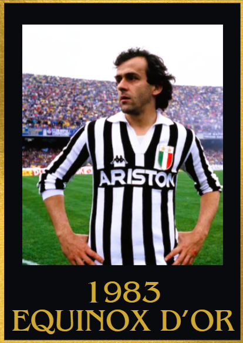
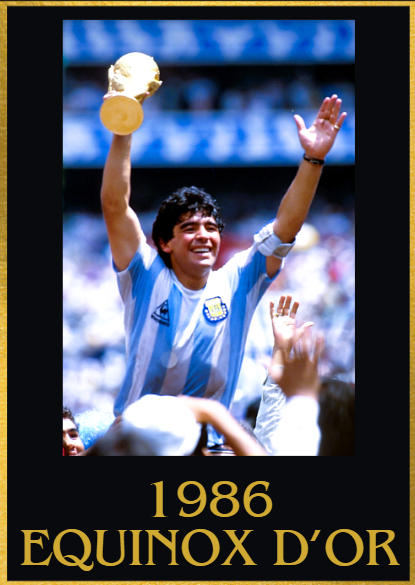
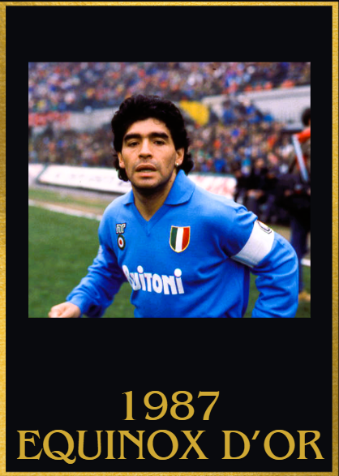
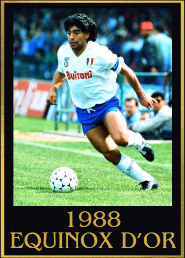

1980s Equinox d'Or Winners
1980
1st: Diego Maradona 🇦🇷 Argentinos Juniors
2nd: Zico 🇧🇷 Flamengo
3rd: Karl-Heinze Rummenigge 🇩🇪 Bayern München
4th: Horst Hrubesch 🇩🇪 Hamburg S.V.
5th: Jan Ceulemans 🇧🇪 Club Brugge

Achievements
- 63 goal contributions
- Carried Argentinos Juniors to a second place finish in the Argentine primera division
Key Moments
- 3 goals and 1 assist vs Austria and Santa Fe
- Hat trick vs San Lorenzo FC
- 4 goals vs Boca Juniors
- Brace vs Ferro, Santa fe, Talleres, Newell's old boys and Quilmes
- 2 goal contributions vs Switzerland and San Lorenzo
1981
1st: Zico 🇧🇷 Flamengo
2nd: Diego Maradona 🇦🇷 Boca Juniors
3rd: Karl-Heinze Rummenigge 🇩🇪 Bayern München
4th: Dino Zoff 🇮🇹 Napoli
5th: Paul Breitner 🇩🇪 Bayern München

Achievements
- 71 goal contributions
- Copa Libertadores winner
- Intercontinental Cup
Key Moments
- Hat trick vs Bolivia, Cerro Porteno and America RJ
- 2 Braces in the copa Libertadores Final vs Vasco de Gama (across 2 legs)
- 2 goal contributions vs Ecuador and Venezuela
- 3 goal contributions vs France and Volta Redonda
- Brace vs Colorado, Campo Grande, Olaria, Cerro Porteno, Botafogo, Fluminense and Cobreloa
- 2 assists vs Liverpool to win the Intercontinental Cup
1982
1st: Zico 🇧🇷 Flamengo
2nd: Karl-Heinze Rummenigge 🇩🇪 Bayern München
3rd: Paolo Rossi 🇮🇹 Juventus
4th: Paulo Falcão 🇧🇷 AS Roma
5th: Bruno Conti 🇮🇹 AS Roma

Achievements
- World Cup top assister
- 74 goal contributions
- Brazilian league winner
Key Moments
- 4 goal contributions vs New Zealand
- 2 goal contributions vs defending world cup champions Argentina
- An assist vs Italy (who went on to win the World Cup)
- Hat trick vs Ferroviário CE
- Brace vs Botafogo
- Goal vs Gremio that helped Flamengo win the brazilian league
1983
1st: Michel Platini 🇫🇷 Juventus
2nd: Zico 🇧🇷 Flamengo
3rd: Kenny Dalgish 🏴 Liverpool
4th: Diego Maradona 🇦🇷 Barcelona
5th: Felix Magath 🇩🇪 Hamburg FC

Achievements
- UEFA Champions league runner up
- Coppa Italia winner
- 42 goal contributions
- Serie A top scorer
Key Moments
- Hat trick of Assists vs Portugal
- Scored in 6 consecutive league games
- Brace to knockout defending UEFA Champions league winners Aston Villa
- 2 goal contributions vs FC Lodz in the UCL semi finals
- Brace vs Udinese, Genoa, Catanzaro, Hellas Verona (coppa italia final)
- Crucial assist vs Roma, Fiorentina and Sampdoria
- 3 goal contributions vs Ascoli
1984
1st: Michel Platini 🇫🇷 Juventus
2nd: Ian Rush 🏴 Liverpool
3rd: Jean Tigana 🇫🇷 Bordeaux
4th: Ricardo Bochini 🇦🇷 Independiente
5th: Graeme Souness 🏴 Liverpool

Achievements
- Euros winner
- Record breaking Euros campaign which saw him score 9 goals in the campaign (record for most goals in a single campaign)
- UEFA Super cup winner
- Serie A top scorer
- Serie A winner
- 55 goal contributions
Key Moments
- Brace vs Torino, Atalanta and Udinese
- Scored in 7 consecutive league games
- 5 assists vs Palermo
- 2 assists vs Cagliari
- Scored in every euro game
- Goal vs Denmark (match winner) and Spain (in the final)
- 2 goal contributions vs Portugal in euros semi final
- Hat trick vs Belgium and Yugoslavia
1985
1st: Michel Platini 🇫🇷 Juventus
2nd: Diego Maradona 🇦🇷 Napoli
3rd: Preben Elkjær 🇩🇰 Hellas Verona
4th: Bernd Schuster 🇩🇪 Barcelona
5th: Karl-Heinze Rummenigge 🇩🇪 Inter Milan

Achievements
- 35 goal contributions
- Finalissima Winner
- Intercontinental Cup winner
- UEFA Champions league winner
- UEFA Champions League Top scorer
Key Moments
Match winning goal in the UEFA Champions League final vs Liverpool
3 goal contributions vs Bordeaux
Brace vs Avelino and Cremonense
Hat trick vs Bari
2 goal contributions vs Argentinos Juniors
Crucial goals vs Inter Milan and Sampdoria
An assist vs Uruguay to win Finalissima
2 assists vs Casertana
1986
1st: Diego Maradona 🇦🇷 Napoli
2nd: Emilio Butragueño 🇪🇸 Real Madrid
3rd: Marco Van Basten 🇳🇱 Ajax
4th: Ian Rush 🏴 Liverpool
5th: Gary Lineker 🏴 Everton/Barcelona

Achievements
- World Cup winner
- World cup golden ball
- World Cup top assister
- 29 goal contributions
Key Moments
- Had the greatest world cup campaign of all time
- A 10/10 rating vs Uruguay in the world cup despite not scoring
- A hat trick of assists vs South korea
- Scored an Equaliser vs defending champions Italy
- Brace vs England and Belgium (Including the iconic goal of the century vs England)
- An assist in the world cup final vs Germany
- Brace vs Hellas Verona
- Crucial goals vs Milan, Inter, Sampdoria and Roma
1987
1st: Diego Maradona 🇦🇷 Napoli
2nd:Emilio Butragueño 🇪🇸 Real Madrid
3rd: Michel 🇪🇸 Real Madrid
4th: Ruud Gullit 🇳🇱 PSV Eindhoven/AC Milan
5th: Paulo Futre 🇵🇹 FC Porto/Atletico de Madrid

Achievements
- Helped Napoli win their first ever Serie A
- Copa America semi finalist
- Coppa Italia winner
- 32 goal contributions
Key Moments
- Brace vs Udinese, Ecuador and Empoli
- 4 goal contributions vs Modena
- Crucial assist vs Juventus
- 2 assists vs Atalanta in the Coppa Italia final
- Goals vs many big teams such as Fiorentina, AC Milan, Cagliari, Juventus and Udinese
1988
1st: Diego Maradona 🇦🇷 Napoli
2nd: Ronald Koeman 🇳🇱 PSV Eindhoven
3rd: Ruud Gullit 🇳🇱 AC Milan
4th: Marco Van Basten 🇳🇱 AC Milan
5th: Frank Rijkaard 🇳🇱 AC Milan/Real Zaragoza

Achievements
- 42 goal contributions
- Carried Napoli to a second place finish in the Serie A
- Serie A top score r
-
- Coppa Italia top scorer
Key Moments
- Brace vs Torino, Modena and Bologna
- Scored or assisted 10 times in 7 consecutive league games vs AC Milan, Fiorentina, Sampdoria, Ascoli, Cesena, Pisa and Avellino
- Crucial goal contributions vs Roma, Internazionale Milan, AC Milan and Juventus
- 2 goals and 3 assists vs Pescara
- 2 goal contributions vs AC Milan
- Goal vs Fiorentina
- Assist vs Juventus
1989
1st: Diego Maradona 🇦🇷 Napoli
2nd: Marco Van Basten 🇳🇱 AC Milan
3rd: Frank Rijkaard 🇳🇱 AC Milan
4th: Franco Baresi 🇮🇹 AC Milan
5th: Lothar Matthäus 🇩🇪 Inter Milan

Achievements
- UEFA Europa League winner
- Europa League player of the season
- Coppa italia winner
- 33 Goal contributions
Key Moments
- Assist vs Sampdoria in the Coppa italia final
- 2 assists vs Lecce
- 4 assists vs Bayern München in the UEFA europa league semi finals(across 2 legs)
- 1 goal vs Juventus in the UEFA Europa league quarter final
- 1 goal and 3 assists vs Stuttgart in the UEFA Europa league final (across 2 legs)
- 3 goal contributions vs AC Milan
- Crucial goal vs AS Roma and Inter Milan
- An assist vs Juventus
- Accumulated 10 goal contributions in 7 games vs pretty tough opponents such as Fiorentina, AC Milan, Inter Milan,AS Roma and Juventus